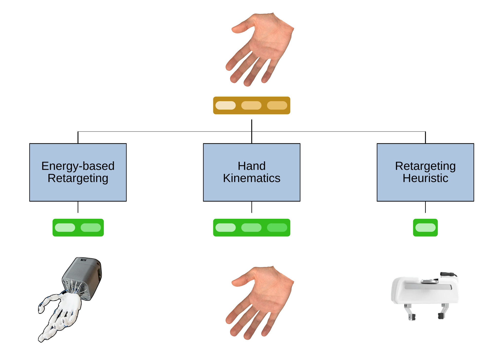
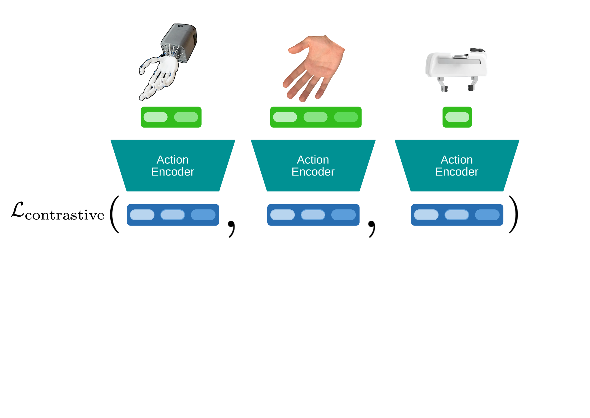
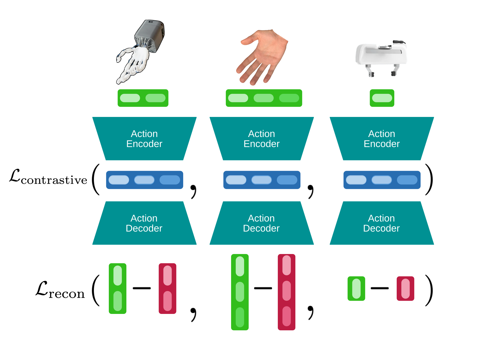
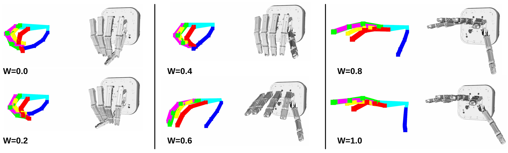
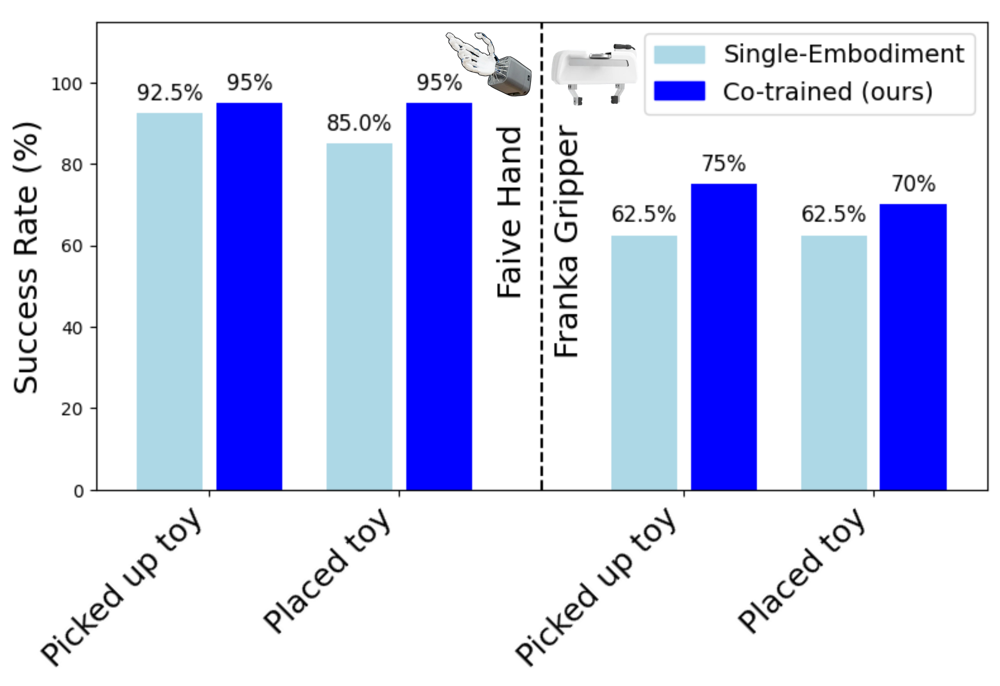
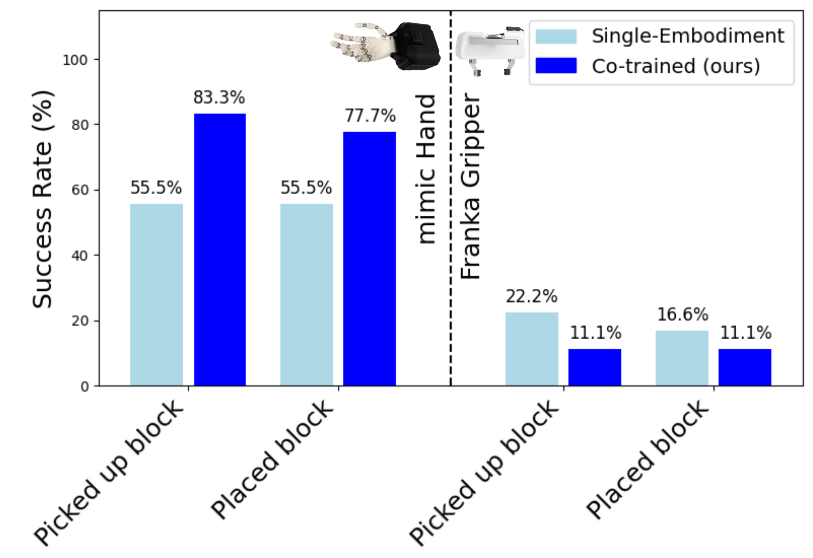
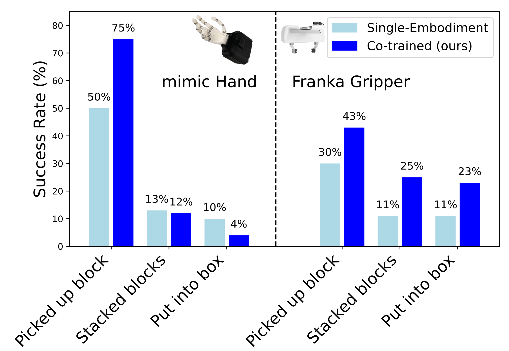

Generating action space data
Using retargeting, we generate cross-modal correspondences in between different action
spaces.

Using retargeting, we generate cross-modal correspondences in between different action
spaces.

To learn latent actions, we utilize a pairwise contrastive loss to maintain the alignment of inputs in the latent space.

We train decoders for each modality to reconstruct ground truth end-effector poses from the encoded latents.

We learn latent cross-embodiment policies. For inference, we utilize the embodiment-specific decoders.

We demonstrate our method for learning latent action space by encoding parallel gripper actions from 0 to 1 and decoding them to actions for the Faive hand and human hand.

We roll out single-embodiment policies trained with explicit actions and latent actions for both embodiments. The policies were trained with 100 demonstrations for each embodiment, respectively. The cross-embodiment policy was co-trained on 100 episodes of data from both embodiments with our proposed methodology. As observation, we use the same external camera for both embodiments.
With the cross-embodiment policy, we can control both end-effectors with a single policy. Additionally, we observe that it exhibits improved manipulation skills: the cotrained policy improves upon the task completion rates of the diffusion policy baseline over 10% and 7.5% for the Faive hand and Franka gripper, respectively.

The policies were trained with 250 demonstrations for each embodiment, respectively. The cross-embodiment policy was trained on all 500 episodes. As observations, we use an external camera and the arm pose. Furthermore, for the mimic hand, we use a wrist camera, which is replaced by zero-padding for the Franka gripper.
For the mimic hand, the cross-embodiment policy outperforms single-embodiment baselines by 13%. For the Franka gripper, the performance decreases with the cotrained policy - we attribute this to the asymmetric observations. This observation is consistent with prior work cotraining on data with missing camera views.

This task contains 3 subtasks: picking up the first block, alignment and stacking with the second block and placing both in the box. The policies were trained with 200 demonstrations for each embodiment, respectively. The cross-embodiment policy was trained on all 400 episodes. As observations, we only use an external camera and the arm pose.
For coarse manipulation skills, we see a significant improvement for the cross-embodied policy for both embodiments. For fine-grained manipulation, success rates for the mimic hand do not change much, likely due to self-occlusion in the workspace camera view. For the Franka gripper, the success rates are drastically improved for the cross-embodied policy.

@article{bauer2025lad,
author = {Erik Bauer and Elvis Nava and Robert K. Katzschmann},
title = {Latent Action Diffusion for Cross-Embodiment Manipulation},
journal = {2026 IEEE International Conference on Robotics and Automation (ICRA)},
year = {2026},
}